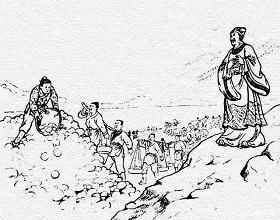
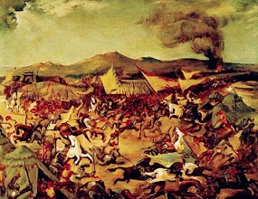
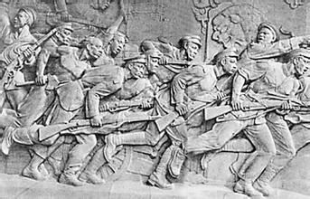
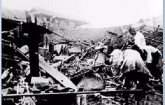
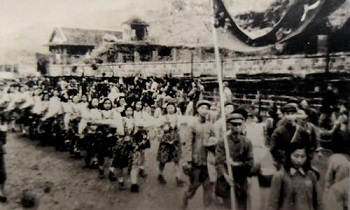

李冰通僰
秦孝文王时(前250年)李冰任蜀郡守，领兵沿江南下开发岷江下游。李冰用“积薪烧岩”之法拓宽航道，并辟山修通了通往宜宾的道路，使今宜宾与蜀郡各地直接沟通。
当时宜宾为僰人聚居区，这条通僰之路，就称为僰道。后这条道路一直修至云南曲靖，绵延2000余里，又因路宽五尺许，称“五尺道”。
从此僰人聚居之地正式纳入秦国蜀郡治理之下。旧时宜宾皆奉“川主庙”，即为崇念李冰开发之功的缘故。

石达开进军宜宾城
清同治元年九月二十七日(1862年11月18日)，太平军将领石达开率主力从贵州镇雄分兵五路直奔筠连，欲夺取宜宾渡江北上。在连克筠连、高县和宜宾县双龙、横江后，战事呈胶着状态。1863年1月起，太平军转入守势，至月底，石达开率残部渡横江河退入云南。太平军进军宜宾，损兵4万。

宜宾辛亥革命
1911年9月“成都血案”后，宜宾各地在同盟会员的组织领导下，举行群众性武装反清起义，成立了川南革命军。
1 2月叙州府宣告独立，5日成立“川南军政府”，标志着清王朝在宜宾的统治的结束。12月21日，新政权遭滇军镇压失败。

日机空袭宜宾
抗日战争中，宜宾城多次被日军飞机空袭。从民国28年1月10日，至民国33年12月20日，宜宾城先后发出空袭警报257次。日军飞机飞临宜宾上空共13次，计轰炸6次，机枪扫射1次，盘旋窜扰6次。6次轰炸中，共出动飞机112架次,投弹1180枚，炸死同胞120余人，炸伤130余人，炸毁房屋180多间。

宜宾城和平解放
1949年12月初，解放军二野16军、18军先头部队兵临宜宾县外围。
宜宾的中共党员和革命工作者积极组织迎接解放的斗争。与***早有联系的***22兵团中将司令、72军军长郭汝瑰于12月11日正式通电起义，宜宾和平解放。
16日，解放军18军54师全面接管宜宾旧政权。
20日，中国人民解放军宜宾军事管制委员会成立，宜宾历史掀开了崭新的一页。（转自新三江周刊）